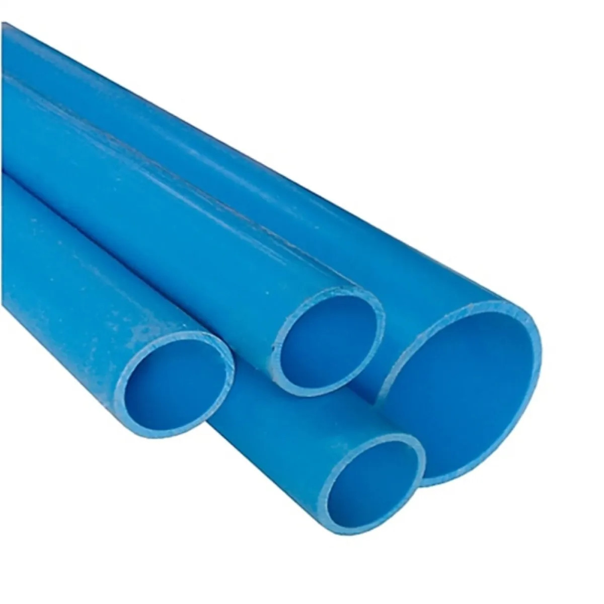

Tubo PVC para agua a presión

Conducto plástico diseñado para transportar agua bajo presión dentro de los límites de su especificación. Se utiliza con uniones y accesorios apropiados, respetando el diámetro y la presión nominal requeridos.